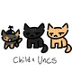

What works today
Everything below is in the app you download.
Grouped the way the app's catalog is. Each group says where it covers: satellite and station data are worldwide, radar is the NEXRAD network, and most alerts and analyses are US products.
Radar
NEXRAD- Level III and super-resolution Level II from the NEXRAD network, including its sites in Puerto Rico, Hawaii, Alaska, Guam, Korea and the Azores.
- Each radar's real products and tilts, checked when you pick it: low cuts below 0.5° and upper tilts up to 19.5° where the radar flies them.
- Dual-pol: correlation coefficient, differential reflectivity, specific differential phase and hydrometeor classification, plus spectrum width, differential phase and clutter filter power from Level II.
- Echo tops, VIL and precipitation accumulations.
- Storm tracks with forecast positions, hail size, rotation and TVS markers, and the towns in each path.
- Loops and archive playback: Level III back to March 2022, Level II for any date.
- The value under the pointer, and GR palettes with a unit per product.
- VAD wind profiles as a time–height display, with a hodograph.
Satellite
Worldwide- Thirteen satellites and groups: GOES-East and GOES-West with their 5-minute blend, Himawari, Meteosat MTG-I and MSG, Metop, NOAA-20 and NOAA-21, Suomi NPP, Terra, Aqua, Sentinel-3 and a global mosaic.
- 96 products: visible, infrared, water vapor, RGB composites, lightning and derived products.
- Loops from 1 hour to 7 days. Frames download only when you press play, and a stop button ends it.
- Full screen resolution when you stop to look, with borders and place names drawn on top.
Observations
North America- HRRR, RAP and RTMA analyses every hour, and RTMA Rapid Update every 15 minutes.
- 103 products, from surface and upper air to severe weather (CAPE, SRH, STP, SCP) and winter weather.
- Labelled contours, wind barbs, the value under the pointer, and place names with the value under each one.
- Up to 7 days of frames on the timeline.
Surface and soundings
Worldwide- METAR station plots anywhere in the world, with each station's recent history.
- SHARPpy soundings from radiosondes, model point forecasts and ACARS aircraft profiles.
- Analysis, risk, comparison and trend views, and your own soundings by upload.
Alerts, reports and outlooks
US- NWS warnings, watches and advisories with full VTEC decoding, on every pane, with an alert rail.
- Local storm reports, and SPC mesoscale discussions with WPC precipitation discussions.
- SPC outlooks for Days 1 to 5, WPC excessive rainfall for Days 1 to 3, and CPC 6–10 and 8–14 day outlooks and hazards.
- NadoCast tornado, significant tornado, wind and hail probabilities.
Pressure
Worldwide- Sea level pressure isobars from 37 models and 1000–500 mb thickness from 28, from NOAA, ECMWF, DWD, the Met Office and Environment Canada.
Workspace
- Split screen into 1, 2, 4 or 6 panes on one camera and one timeline.
- Nine basemaps across vector, imagery and terrain, and a globe projection.
- Distance, area and radius measurements on the map.
- Export the view as PNG, or an animation as GIF or MP4.
- Place search, and light, dark and automatic themes.
- No account needed. Sign in to share your position with other chasers, see theirs and pin your home.
- Updates install themselves on the next launch.
Why WeatherTS
Radar, satellite, analyses, soundings and alerts usually live in separate services, and much of the advanced part sits behind paid plans. WeatherTS reads public data from NOAA, the NWS, NASA, EUMETSAT, ECMWF and others, and puts it on one map and one timeline, with no paid plan and no usage limit.
In development
What is being built, and what comes after.
Being built
- The MRMS national mosaic — already in the catalog, locked until it is ready.
- Surface fronts, back in the catalog.
- Model fields beyond pressure and thickness.
- A total lightning layer.
Planned
- Radar beyond the NEXRAD network.
- Warnings from other countries, through CAP.
- Cross sections and meteograms.
- Tropical cyclones, aviation and marine products.
- Share links that reopen your exact view.
- Notifications on thresholds you set.
- A data API.
Download
Always the newest release.
The link is resolved when the page loads, and the app updates itself from then on.
Download for Windows- Version
- checking…
- Size
- —
- Released
- —
- Requires
- Windows 10 or 11, 64-bit
Questions
Is it really free?
Yes. There is no paid tier, no locked feature and no usage limit.
Do I need an account?
No. The app opens without one. Signing in is only for sharing your position with other chasers, seeing theirs, and pinning your home.
Does it work outside the US?
In part. Satellite, METAR observations and the pressure charts cover the world. Radar is the NEXRAD network: the US and its sites in Puerto Rico, Hawaii, Alaska, Guam, Korea and the Azores. Alerts, storm reports, outlooks and the HRRR and RTMA analyses are US products, and the RAP covers North America.
How do updates work?
Installed copies check for a new release when they start and install it on the next launch. You only download the installer once.
Where does the data come from?
Public sources: NOAA and the NWS (NEXRAD, HRRR, RAP, RTMA, SPC, WPC, CPC), NASA GIBS, NOAA nowCOAST, EUMETSAT, the Aviation Weather Center, ECMWF, DWD, the Met Office, Environment Canada, the Iowa Environmental Mesonet and NadoCast.
Can I see the code?
Yes. It is on GitHub, with every release.
Will there be an API?
That is the plan, and it is still being defined.
Who is it for?
Meteorologists and forecasters first, and storm chasers, researchers and students too.
Credits
Made by Pablo Arzão
WeatherTS is built by Pablo Arzão, a Brazilian teenager with a deep passion for programming and meteorology, bringing the two together into a single free platform.
justnarrow
Inspired by AguaceroWx — thank you for being a huge inspiration for this project.
Thank you for helping with this development


When it leaves beta
One email, when WeatherTS leaves beta.
Leave your address and you will get that one message, and nothing else.